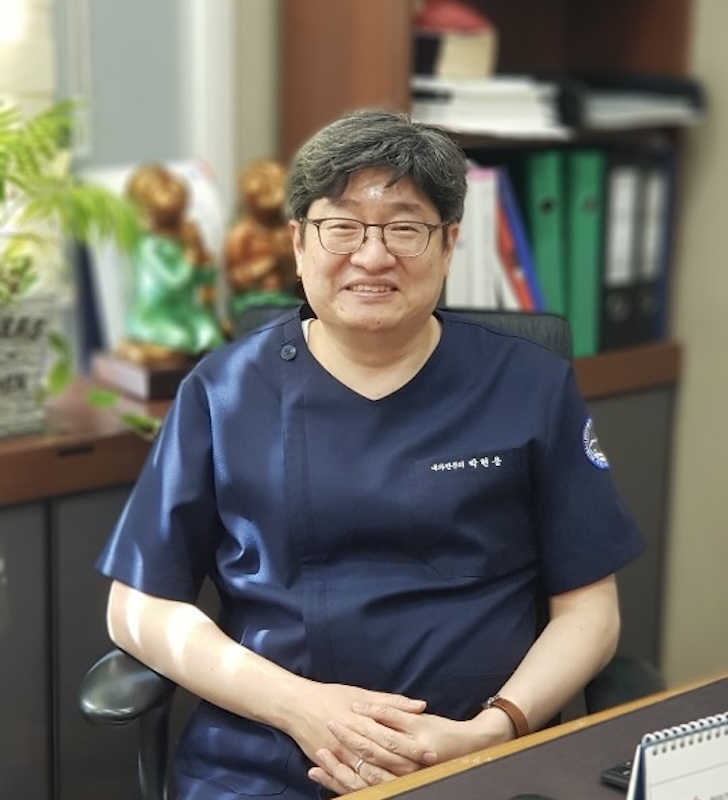

병원소개
2002년부터 20년 넘게, 한 자리에서 지켜온 신뢰

박현용 원장
내과전문의
- 소화기내과분과전문의 자격인정 (대한내과학회, 2002년~)
- 소화기내시경 세부전문의 자격인정 (대한소화기내시경학회, 2002년~)
- 대한당뇨병학회 평생회원 (2002년~)
- 대한고혈압학회 정회원 (2002년~)
- 전(前) 부산경남내과학회 회장
20년이 넘는 시간 동안 부산 남구 용호동에서 한 자리를 지켜온 박현용내과의원입니다. 소화기내과 분야의 전문성을 바탕으로, 내시경·초음파·건강검진까지 한 곳에서 세심하게 진료합니다.
병원 성장 기록
개원 ~ 현재
용호동 한 자리
2002년~
소화기내과분과전문의 자격인정
소화기내시경 세부전문의 자격인정
소화기내시경 세부전문의 자격인정
최근
누적 진료 10만 명
누적 내시경검사 2만례 이상
누적 내시경검사 2만례 이상